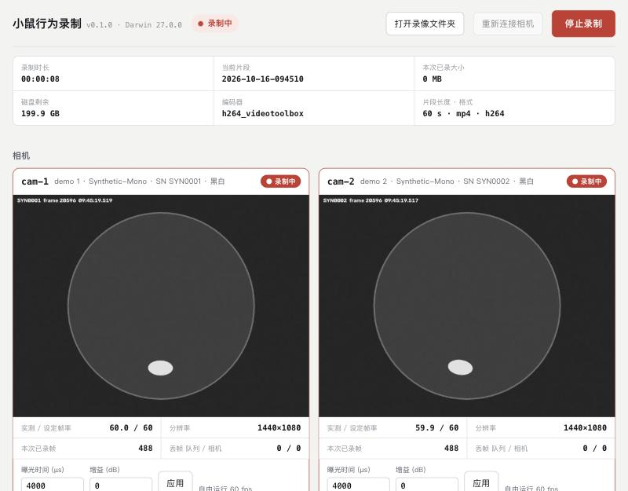

小鼠行为多相机录制系统：安装指南
本指南说明如何安装硬件（相机、镜头、红外灯、Arduino 触发器）和软件（相机驱动、录制服务），并完成第一次录制。
0总览和顺序
系统由 2–4 台海康机器人（Hikrobot）USB3 工业相机、1 块 Arduino UNO 和 1 台录制电脑组成。Arduino 给所有相机同时发出触发脉冲，所以每台相机在同一时刻拍下一帧。
录制服务是一个 Python 程序。启动后，它在浏览器中打开一个网页。在网页上点击“开始录制”，录像自动按 1 分钟切成片段，保存为 H.264 MP4 文件。也可以在“定时”一格填录制分钟数：到时间自动停止，正好得到完整的片段（例如 5 分钟 = 5 个 1 分钟片段）。
第一次安装的顺序
请按下面的顺序做。每一步都有链接，指向详细说明。总时间约 3–4 小时（不含买东西的时间）。
- 核对硬件清单10 分钟
- 设置电脑：USB 和电源15 分钟
- 安装 Python、Git、MVS 驱动、Arduino IDE40 分钟
- 运行 install_windows.bat5 分钟
- 演示模式试录（不接相机）5 分钟
- 装镜头，接相机 USB，在 MVS 中看到画面30 分钟
- 真实相机：自由运行模式试录20 分钟
- 上传 Arduino 程序10 分钟
- 触发接线（黄线、绿线）20 分钟
- 切换到触发模式，检查同步15 分钟
- 完成硬件首测清单1 小时（含 1 小时连续录制）
没有相机时，也可以运行完整的软件。双击 start_demo_windows.bat，程序用 2 台虚拟相机录制。先用演示模式确认软件安装正确，再接真实相机。
1硬件清单
下表是 1 套系统（最多 4 台相机）的清单。“数量”按 4 台相机计算。只接 2 台相机时，相机相关的数量减半。
| 物品 | 型号 / 规格 | 数量 | 说明 |
|---|---|---|---|
| 黑白相机 | MV-CS016-10UM（160 万像素，1440×1080，全局快门，USB3） | 2 | 红外（940 nm）录制用 |
| 彩色相机 | 已有的 2 台海康 USB3 彩色相机 | 2 | 彩色相机有红外截止滤光片，只能在可见光下用，在红外光下几乎全黑 |
| 镜头 | MVL-MF0824M-5MPE（8 mm，F2.4，C 口，2/3″） | 4 | 前端滤镜螺纹 M35.5×0.5 |
| USB3 线 | 相机配套 USB3.0 线（Micro-B，带锁紧螺丝），建议 ≤ 3 m | 4 | 不要用 USB 延长线和 HUB |
| I/O 线 | MV-ACC-01-2101（6 针 I/O 线，一端是相机插头，一端是散线） | 4 | 每台相机 1 根，用于触发 |
| Arduino | Arduino UNO R3（或兼容板）+ USB A–B 线 | 1 | 由电脑 USB 供电 |
| 接线材料 | 杜邦线（公头）、小面包板或接线端子（如 Wago 221）、电工胶带或热缩管 | 1 套 | 用于把 4 根绿线合到一个 GND |
| 电阻 | 470 Ω，1/4 W（470 Ω–1 kΩ 都可以） | 4 | 每根黄线串 1 个，限制触发电流（见 第 4 节） |
| 红外灯 | 940 nm“无红暴”红外补光灯，DC 12 V，常亮 | 2 | 每个录制位 2 个；配 12 V 电源适配器 |
| 柔光材料 | 柔光纸或磨砂亚克力板 | 2 | 放在红外灯前面，减少亮斑 |
| 三脚架 | 带横臂的三脚架 + 1/4 英寸螺丝 | 4 | 相机从正上方向下拍 |
| 场地 | 无刻度玻璃烧杯，直径 15 cm 和 20 cm | 按需 | 每杯 1–3 只小鼠 |
| 底板 | 哑光（不反光）底板或布 | 按需 | 白色小鼠用深色底；黑色小鼠用浅色底 |
| 录制电脑 | Windows 10/11 64 位；USB3 口；SSD；NVIDIA 显卡（可选，用于硬件编码） | 1 | 4 台相机时建议加 1 块 PCIe USB3 扩展卡 |
| 滤光片（可选） | 940 nm 带通滤光片，M35.5×0.5 螺纹 | 0–4 | 可以不买。室内灯光干扰大时再加 |
黑白相机没有彩色滤镜，对 940 nm 红外光更敏感，画面更清晰。940 nm 光小鼠看不见，不影响它们的昼夜节律。
2系统连接图
相机通过 USB3 线把画面传到电脑，同时从 USB 取电。Arduino 通过 I/O 线给每台相机发触发脉冲。红外灯用自己的 12 V 电源，和电脑、Arduino 都不相连。
USB 带宽
1 台相机以 1440×1080、60 fps、8 位输出时，数据量约 93 MB/s。4 台相机约 373 MB/s。1 个 USB3（5 Gbps）控制器实际约能传 350–400 MB/s，所以 4 台相机要分到 2 个控制器上。
前面板的 USB 口、显示器上的 USB 口、USB HUB 都不适合接相机。请用主板后面板的蓝色 USB3 口或 PCIe USB3 扩展卡。
3相机、镜头和红外灯
3.1 装镜头
- 取下相机前面的防尘盖和镜头后盖。
- 把镜头顺时针拧到相机的 C 口上，拧到底，不要用力过大。
- 把光圈环先放在 F4 左右。光圈越小（F 数越大），景深越大，但画面越暗。
- 先不要锁紧对焦环和光圈环的螺丝。在软件里看到画面后再调（见 8.2）。
3.2 相机高度
相机在烧杯正上方，镜头向下。下表的高度是从镜头前端到烧杯底面的距离，按黑白相机 MV-CS016-10UM（感光面约 4.97 × 3.73 mm）计算。视野短边比烧杯直径多 2–3 cm，留出余量。
| 烧杯直径 | 需要的视野（短边） | 8 mm 镜头高度 | 6 mm 镜头高度（参考） |
|---|---|---|---|
| 15 cm | 约 17 cm | 约 37 cm | 约 27 cm |
| 20 cm | 约 23 cm | 约 49 cm | 约 37 cm |
计算方法：高度 ≈ 镜头焦距 × 视野短边 ÷ 3.73 mm。彩色相机的感光面可能不同，最后以网页预览为准：烧杯底面完整地在画面中，四周留一点余量。
- 用三脚架的横臂，让相机在烧杯中心的正上方。镜头光轴应垂直于底面。
- 锁紧所有螺丝。相机移动后，标定和画面位置都要重新做。
- 烧杯下面放哑光底板，不要用会反光的桌面。
3.3 红外灯
- 用 2 盏灯，放在烧杯两侧，和竖直方向成 30–45°。两侧照明可以减少小鼠的影子。
- 在灯前放柔光纸或磨砂亚克力板，让光更均匀。
- 检查烧杯杯壁上的亮斑。如果预览中有亮斑，把灯放低一点或向外移，直到亮斑离开杯底区域。
- 录制时红外灯一直开着。不要用定时开关。
- 红外光会改变对焦位置。换成红外照明后，在红外光下重新对焦。
940 nm 光人眼看不见，但灯珠功率可能很大。不要近距离直视点亮的灯珠。灯会发热，不要用纸直接盖住灯面。
开始动物实验前，请和动物房或兽医确认长时间红外照明可以使用。
3.4 滤光片（可选）
940 nm 带通滤光片可以挡住室内的可见光。它不是必需的：如果录制时关闭室内灯，或者室内光对画面影响很小，可以不装。需要时，买 M35.5×0.5 螺纹的 940 nm 带通滤光片，拧在镜头前端。
4触发接线（Arduino → 相机）
每台相机用 1 根 6 针 I/O 线。每根线只用 2 根芯：黄线（Line0+，触发输入）串一个 470 Ω 电阻后接 Arduino 的 D9–D12，绿线（Line0−，输入地）接 Arduino 的 GND。其余的线都不接。
下表的颜色来自 MV-ACC-01-2101 的常见版本。不同批次的线颜色可能不同。接线前，请对照线缆标签或相机说明书（“I/O 接口定义”一节），并用万用表通断档确认：哪根线通到插头的第 2 针，哪根通到第 5 针。
橙线（第 1 针）是相机电源输入。绝对不要把它接到 Arduino 的任何引脚。
| 针 | 信号 | 线色（以说明书为准） | 接到 |
|---|---|---|---|
| 1 | 相机电源输入（DC） | 橙 | 不接，剪短并单独绝缘 |
| 2 | Line0+（光耦隔离输入） | 黄 | 串 470 Ω 电阻 → Arduino D9 / D10 / D11 / D12（每台相机 1 个脚） |
| 3 | Line2（可配置 I/O） | 以说明书为准 | 不接，单独绝缘 |
| 4 | Line1+（光耦隔离输出） | 以说明书为准 | 不接，单独绝缘 |
| 5 | Line0− / Line1−（光耦地） | 绿 | Arduino GND（4 台相机的绿线合在一起） |
| 6 | GND | 以说明书为准 | 不接，单独绝缘 |
接线步骤
接线前，拔掉所有相机的 USB 线和 Arduino 的 USB 线。
- 对每根 I/O 线，用万用表确认第 2 针和第 5 针对应的线色。
- 把橙线（第 1 针）和其余不用的线剪短，每根单独包好电工胶带或热缩管，互相不能碰到。
- 把 cam-1 的黄线串一个 470 Ω 电阻，接到 Arduino 的 D9。用杜邦线或接线端子，保证接触牢固。
- 同样，把 cam-2 的黄线（串电阻）接 D10，cam-3 接 D11，cam-4 接 D12。
- 把所有相机的绿线接到同一个面包板横排或接线端子上。
- 用 1 根杜邦线，把这个横排连到 Arduino 的 GND（13 号脚旁边那个）。
- 把每根 I/O 线的 6 针插头插到相机背面的 I/O 口，对准缺口，拧紧锁紧环。
- 用胶带把 Arduino 和接线固定好，防止被拉扯。
Arduino 输出 5 V 脉冲，宽 1 ms。相机的 Line0 是光耦隔离输入，接受 5 V 信号。每根黄线串一个 470 Ω–1 kΩ 电阻，限制光耦的电流，也保护 Arduino 的引脚。实测：2 台 MV-CS016-10UC，各串 470 Ω，60 fps 触发没有漏帧（2026-10-16）。
每个 Arduino 引脚最好只接 1 台相机。如果 2 台相机接同一个引脚，每台都要有自己的电阻。
5电脑设置（Windows）
这些设置防止 Windows 为了省电关掉 USB 口或进入睡眠。录制服务在录制时会阻止电脑睡眠，但 USB 省电要手动关闭。
5.1 电源计划和 USB 选择性暂停
- 按 Win+R，输入
powercfg.cpl，按回车。 - 选择“高性能”（如果没有，先点“显示附加计划”）。
- 点“更改计划设置”→“更改高级电源设置”。
- 展开“USB 设置”→“USB 选择性暂停设置”，选“已禁用”。点“确定”。
- 打开“设置”→“系统”→“电源”（Windows 10 是“电源和睡眠”），把“接通电源时，电脑进入睡眠状态”设为“从不”。
也可以用命令完成第 4 步（在“命令提示符”中运行）：
powercfg /SETACVALUEINDEX SCHEME_CURRENT 2a737441-1930-4402-8d77-b2bebba308a3 48e6b7a6-50f5-4782-a5d4-53bb8f07e226 0 powercfg /SETACTIVE SCHEME_CURRENT
5.2 设备管理器中的 USB 节能
- 右键“开始”按钮，选择“设备管理器”。
- 展开“通用串行总线控制器”。
- 对每个“USB 根集线器（USB 3.0）”：右键 →“属性”→“电源管理”，取消勾选“允许计算机关闭此设备以节约电源”。
5.3 硬盘和系统更新
- 把录像保存到 SSD 上，例如 D:\MouseRecordings。每台相机每小时约 2–3.5 GB（实测，见 第 10 节）。按每台相机每小时 5 GB 准备磁盘空间。
- 在“设置”→“Windows 更新”中设置“使用时段”，或在实验期间暂停更新，防止系统在录制时自动重启。
6安装软件和驱动（Windows）
需要安装 5 个软件：Python、Git、海康 MVS（相机驱动）、Arduino IDE，最后运行本项目的安装脚本。下面的 winget 命令在 Windows 10/11 自带的“命令提示符”或“终端”中运行。如果 winget 不能用，按每一步给出的网址手动下载。
6.1 Python 3.12（64 位）
winget install -e --id Python.Python.3.12
手动安装：打开 python.org/downloads/windows，下载 “Windows installer (64-bit)”。
手动安装时，在安装程序的第一个界面勾选 “Add python.exe to PATH”，再点 “Install Now”。必须是 64 位版本（3.9 或更新，推荐 3.11 或 3.12）。
6.2 Git
winget install -e --id Git.Git
手动安装：git-scm.com/download/win，所有选项用默认值。安装后，关闭并重新打开命令提示符窗口。
6.3 下载代码
把代码放在只有英文字母、没有空格的路径下，例如 D:\mouse-project。不要放在“桌面”或带中文的文件夹里。
cd /d D:\ git clone https://github.com/erdanzhang/mouse-project.git
没有 D 盘时，把 D:\ 换成 C:\。没有 Git 时，也可以在 GitHub 页面点 “Code → Download ZIP”，解压到 D:\mouse-project。用 ZIP 时，以后更新要重新下载。
6.4 海康机器人 MVS（相机驱动和 SDK）
- 打开海康机器人下载中心：hikrobotics.com → 服务支持 → 下载中心 → 机器视觉。
- 下载 “MVS 客户端” 的 Windows 版本（V4.x 或更新；V5.0.2 已实测可用）。
- 运行安装程序。安装路径用默认值（C:\Program Files (x86)\MVS）。录制服务在这个位置自动找到 MVS 的 Python 接口。
- 在驱动选项中，保持 USB3 Vision 驱动为勾选。
- 安装完成后，重新启动电脑。
- 用 USB3 线连接 1 台相机，打开 MVS 客户端。
- 在左侧设备列表的 “USB” 下找到相机，双击连接，点“开始采集”按钮，确认能看到画面。
- 在相机属性中确认连接速度是 USB3.0。如果显示 USB2.0，换一个蓝色 USB3 口或换线。
- 对每台相机重复第 6–8 步。
- 关闭 MVS 客户端。同一时间只有一个程序能打开相机；MVS 开着时，录制服务找不到相机。
如果下载页地址变了：在 hikrobotics.com 搜索 “MVS”，下载最新的 Windows 客户端。
6.5 Arduino IDE
winget install -e --id ArduinoSA.IDE.stable
手动安装：arduino.cc/en/software。安装时如果提示安装 USB 驱动，点“安装”。
兼容板（非原装 UNO）常用 CH340 芯片。插上后在设备管理器的“端口 (COM 和 LPT)”中看不到它时，安装 CH340 驱动（WCH 官网的 CH341SER）。
6.6 运行安装脚本
- 打开文件夹 D:\mouse-project。
- 双击
install_windows.bat。第一次安装需要 1–3 分钟（需要联网）。 - 等窗口显示
Install finished.。 - 检查窗口中的检查结果（见下面的例子）。
- 按任意键关闭窗口。
检查结果应该类似这样：
OS / arch Windows / AMD64 Python 3.12.x ffmpeg ...\imageio_ffmpeg\binaries\ffmpeg-win-x86_64-v7.1.exe Hikrobot MVS SDK yes -> recorder encoder libx264 (有 NVIDIA 显卡并装了完整 ffmpeg 时是 h264_nvenc)
- Hikrobot MVS SDK 必须是
yes。如果是no，见 常见问题。 - 安装脚本同时创建本机配置文件 rig\config\recorder.local.yaml。以后只改这个文件。
6.7 可选：用 NVIDIA 显卡编码
安装脚本自带一个 ffmpeg，用 CPU 编码（libx264）。4 台相机 60 fps 时 CPU 负担较大。电脑有 NVIDIA 显卡时，安装完整版 ffmpeg，录制服务会自动改用显卡编码（h264_nvenc）：
winget install -e --id Gyan.FFmpeg
安装后关闭并重新打开窗口，双击 open_terminal_windows.bat，运行 mouse-rig report，确认 “recorder encoder” 变成 h264_nvenc。
6.8 以后更新软件
- 关闭录制服务窗口。
- 在 D:\mouse-project 中运行下面的命令。
- 再双击一次
install_windows.bat。
cd /d D:\mouse-project git pull
recorder.local.yaml 不在 Git 中，更新不会改动你的设置。
7上传 Arduino 程序
程序文件是 rig\hardware\sync_trigger\sync_trigger.ino。它让 D9–D12 每秒同时输出 60 个脉冲（默认值），板上的 L 灯每秒亮灭切换一次。
- 用 USB 线把 Arduino 接到录制电脑。
- 打开 Arduino IDE，选择“文件”→“打开”，打开 D:\mouse-project\rig\hardware\sync_trigger\sync_trigger.ino。
- 选择“工具”→“开发板”→“Arduino AVR Boards”→“Arduino Uno”。
- 选择“工具”→“端口”→ 带 “Arduino Uno” 字样的 COM 口（例如 COM3）。
- 点左上角的“上传”按钮（向右的箭头）。等下面显示“上传成功”。
- 检查板上的 L 灯：亮 1 秒、灭 1 秒，一直重复。
- 打开“工具”→“串口监视器”。在右下角把波特率设为
115200，换行方式设为“换行”（New Line）。 - 在输入框中输入
?，按回车。应该看到类似fps=60 running=yes pulses=12345的一行。 - 关闭串口监视器（或关闭 Arduino IDE）。串口监视器开着时，录制服务不能通过 USB 控制 Arduino。
| 串口命令 | 作用 |
|---|---|
1–200 的数字 | 设置每秒脉冲数（帧率） |
s | 停止脉冲 |
r | 恢复脉冲 |
? | 显示状态：fps=… running=… pulses=… |
Arduino 的 USB 线插在录制电脑上时，录制服务会自动找到它，把它的帧率设成配置文件中的 fps，并在打开相机时让所有相机从同一个脉冲开始计数。所以通常不需要手动输入命令。
Arduino 每次重新上电后恢复默认的 60 fps。只有不用 USB 连接时（例如 Arduino 用充电器供电），才需要改程序里的 fps = 60 再上传。
8第一次运行
8.1 演示模式（不接相机）
- 双击
start_demo_windows.bat。一个黑色窗口打开，浏览器自动打开http://127.0.0.1:8765。 - 确认网页上有 2 个“虚拟相机”画面，画面中有一个移动的椭圆（模拟小鼠）。
- 点“开始录制”，等 70 秒，再点“停止录制”，在弹出的确认框中点“确定”。
- 点“打开录像文件夹”，确认有一个以日期时间命名的文件夹，里面有 2 个
clip-…子文件夹。 - 用 VLC 等播放器打开
cam-1.mp4，确认能播放。 - 关闭黑色窗口，停止服务。

| 网页上的项目 | 含义 |
|---|---|
| 定时 … 分钟 | 录制时长。填 5 时，录制 5 分钟后自动停止，正好得到 5 个完整的 1 分钟片段（60 fps 时每个 3600 帧）。空或 0 = 不定时，点“停止录制”才停。默认值来自配置 max_minutes。 |
| 开始录制 / 停止录制 | 开始或停止一次录制。停止时，当前片段被完整保存。 |
| 重新连接相机 | 插拔相机或修改接线后点这个按钮。录制中不能用。 |
| 录制时长 | 已录的时间。定时录制时显示“已录 / 设定”，例如 00:02:31 / 00:05:00。 |
| 当前片段 | 正在写入的 1 分钟片段的文件夹名。 |
| 编码器 | 正在用的视频编码器（libx264 = CPU，h264_nvenc = NVIDIA 显卡）。 |
| 同步 | “自由运行”= 相机各自拍摄，不同步；“Arduino COM3 · 60 fps”= 硬件触发，已通过 USB 找到 Arduino。 |
| 实测 / 设定帧率 | 相机实际送来的帧率。低于设定值的 90% 时显示为红色。 |
| 丢帧 队列 / 相机 | “队列”= 编码器来不及处理而丢掉的帧；“相机”= USB 传输中丢失的帧。都应该是 0。 |
| 曝光时间、增益 + 应用 | 立刻改变画面亮度，用于调试。不会保存，调好后要写进配置文件（见 8.4）。 |
8.2 真实相机：自由运行模式
先不接 Arduino，在自由运行模式（trigger: "free"，安装后的默认值）下检查每台相机的画面。
- 确认 MVS 客户端已经关闭。
- 把所有相机的 USB3 线插到电脑上（按 图 1 分配控制器）。
- 双击
start_recorder_windows.bat。 - 确认网页上每台相机都有画面，状态是“正常”，实测帧率约 60。
- 调光圈和对焦：看着预览，转镜头的对焦环，让杯底的小鼠（或放一张有字的纸）最清楚，然后锁紧螺丝。
- 调曝光：在相机卡片中改“曝光时间 (µs)”，点“应用”。建议 ≤ 4000 µs，快速的挠鼻动作才不会拖影。
- 画面太暗时，按这个顺序处理：先加红外灯亮度或调近灯，再开大光圈，最后才加增益。增益越大，噪声越多，文件也越大。
- 录制 2 分钟，检查录像（见 8.6）。
曝光时间必须小于 1 秒 ÷ 帧率。60 fps 时，曝光必须小于 16 666 µs，实际建议 ≤ 4000 µs。曝光太长时，实测帧率会下降。
8.3 固定相机编号（cam-1 … cam-4）
默认的编号顺序取决于电脑找到相机的顺序，可能每次不同。按序列号固定顺序：
- 双击
open_terminal_windows.bat，打开一个命令窗口。 - 运行下面的命令，记下每台相机的
serial=序列号。 - 用记事本打开 D:\mouse-project\rig\config\recorder.local.yaml。
- 把序列号按想要的顺序写进
order（见下面的例子），保存。 - 关闭录制服务窗口，再双击
start_recorder_windows.bat，确认编号正确。
mouse-rig cameras
提示：用手挡住一台相机的镜头，在网页上看是哪个画面变黑，就知道它是哪个编号。可以在相机外壳上贴标签。
8.4 把调好的参数写进配置文件
网页上改的曝光和增益只在本次运行中有效。调好后，写进 recorder.local.yaml：
recording:
output_dir: D:/MouseRecordings
cameras:
order: ["DA1234567", "DA7654321", "DA1111111", "DA2222222"]
default:
fps: 60
exposure_us: 4000
gain_db: 0
trigger: "free"
overrides:
DA1234567: {label: "黑白-左", exposure_us: 3000, gain_db: 2}
DA7654321: {label: "黑白-右", exposure_us: 3000}- 序列号是示例，换成
mouse-rig cameras显示的真实序列号。 - 只改需要改的行，保留文件中的其他内容。
- 缩进用空格，不要用 Tab。冒号后面要有 1 个空格。
trigger的值要加英文引号："free"或"line0"。- Windows 路径用正斜杠：
D:/MouseRecordings。 - 保存后，关闭并重新启动录制服务，修改才生效。
8.5 切换到触发模式（多相机同步）
- 确认 Arduino 的 USB 线插在录制电脑上，Arduino IDE 的串口监视器已关闭。
- 在 recorder.local.yaml 中，把
trigger: "free"改成trigger: "line0"，保存。 - 关闭录制服务窗口，再双击
start_recorder_windows.bat。 - 在网页顶部的“同步”一格，确认显示
Arduino COM… · 60 fps。 - 确认每台相机的状态是“正常”，帧率一格显示“… / 触发”，实测帧率约 60。
- 测试触发：拔掉 Arduino 的 USB 线。所有相机的画面应该停住，几秒后显示“等待画面”。
- 插回 Arduino 的 USB 线，点“重新连接相机”。画面应该恢复。
- 在“定时”一格填
3，点“开始录制”。3 分钟后录制自动停止，网页显示“定时录制完成”。然后检查（见 8.6）：正好 3 个片段，每个 3600 帧。
第 6 步说明相机确实由 Arduino 触发。如果拔掉 Arduino 后画面还在动，说明相机还在自由运行，检查 trigger 的值和接线。
8.6 检查一次录制
- 双击
open_terminal_windows.bat。 - 运行
mouse-rig check。它检查最新的一次录制。 - 确认每个片段最后一列都是
yes。
mouse-rig check mouse-rig check --decode
第二个命令还会解码每个视频并数帧，比较慢。输出示例（触发模式，2 台相机）：
sync : hardware trigger (Line0) aligned by Arduino gate over USB serial (exact) frames/clip 3600 ... cam-1 : serial DA1234567 1440x1080 measured 60.0 fps dropped(queue) 0 lost(camera) 0 filled 0 cam-2 : serial DA7654321 1440x1080 measured 60.0 fps dropped(queue) 0 lost(camera) 0 filled 0 clip cam-1 cam-2 same? clip-2026-10-20-143005 3600 3600 yes clip-2026-10-20-143105 3600 3600 yes clip-2026-10-20-143205 1214 1214 yes
- 完整的片段应该有 60 秒 × 60 fps = 3600 帧。手动停止时，最后一个片段较短，是正常的；定时录制没有这个短片段。
- 触发模式：每个片段中所有相机的帧数必须相同。
- 自由运行模式：相机之间差 1–2 帧是正常的，最后一列显示
yes (free-run, 1 apart)。 --decode时每格是“CSV 行数/视频帧数”，两个数必须相同。dropped、lost、filled应该是 0。不是 0 时，见 常见问题。
9日常录制流程
- 打开红外灯电源。
- 确认 Arduino 的 L 灯在闪（触发模式）。
- 双击
start_recorder_windows.bat。 - 在网页上检查每台相机的画面、帧率和“同步”一格。
- 放入小鼠。在“定时”一格填实验时长（分钟，例如
15），点“开始录制”。到时间录制自动停止，正好得到 15 个 1 分钟片段。 - 不定时（“定时”一格为空）时，实验结束点“停止录制”。
- 运行
mouse-rig check，确认全部是yes。 - 把录像文件夹复制到备份硬盘。
关闭服务窗口会停止录制。正常停止时（关闭窗口或按 Ctrl+C），当前片段会被保存。即使程序意外退出，已写入的 MP4 也能播放。
10录像文件说明
每次录制（一个“会话”）生成一个文件夹。会话中每 1 分钟生成一个片段文件夹，每台相机在每个片段中有一个视频和一个帧时间表。
视频格式
- MP4 容器，H.264 编码，YUV 4:2:0，每秒 1 个关键帧。
- MP4 是分段式（fragmented）的：程序意外退出时，已写入的部分也能播放。
- 黑白相机的视频也是普通的 H.264，任何播放器都能打开。推荐用 VLC 播放。
- 文件大小由配置中的
quality决定（high/balanced/small，见下面的说明）。
数据量（实测 2026-10-16）：彩色相机，1440×1080，60 fps，增益 16 dB，NVIDIA 编码，balanced：每台相机每分钟约 30–60 MB，即每小时约 2–3.5 GB。画面越亮、噪点越多（增益越高），文件越大；红外灯充足、增益低时会更小。用 session.json 中的 size_mb 计算你自己的数值。
为什么文件不能更小：相机画面中大部分数据是传感器噪点，不是小鼠的细节。我们用相机的无损录像做过对比：
quality | NVIDIA 编码参数 | 文件大小 | 清晰度（和无损录像比） |
|---|---|---|---|
high | cq 22 | 约为 balanced 的 1.8 倍 | 最好 |
balanced（推荐） | cq 24 | 基准 | 和 high 看不出区别（VMAF 只差 0.3） |
small | cq 26 | 约为 balanced 的 1/3 | 噪点更平滑，VMAF 差约 1；先用真实小鼠录像确认快速动作的细节再用 |
H.265（codec: h265）和 AV1 在这种画面上没有比 H.264 更小，而且 AV1 解码慢 5 倍，所以保持 H.264。关键帧间隔加长也几乎不省空间。
frames.csv（每帧一行）
| 列 | 含义 |
|---|---|
frame_in_clip | 在本片段视频中的帧号（从 0 开始），和视频的第几帧一一对应 |
frame_in_session | 在整个会话中的帧号 |
host_time_unix | 这一帧到达电脑的时间（Unix 秒，带小数） |
host_time_local | 同上，本地时间，精确到毫秒 |
camera_frame_id | 相机自己的帧计数 |
camera_timestamp | 相机自己的时间戳（相机时钟单位） |
trigger_index | 触发模式：Arduino 脉冲编号。所有相机中相同编号的帧是同一时刻拍的 |
filled | 1 = 这台相机丢了这一帧，视频中用上一帧代替，保证所有相机的帧号对齐 |
触发模式下，同一片段中所有相机的第 i 帧是同一个 Arduino 脉冲拍下的。分析多视角数据时，直接按帧号对齐即可。
11配置参考
配置文件：rig\config\recorder.local.yaml（本机设置）。模板 recorder.yaml 中每一项都有中文注释。修改后重新启动录制服务。
| 项目 | 默认值 | 说明 |
|---|---|---|
recording.output_dir | ~/MouseRecordings | 录像根目录。Windows 建议 D:/MouseRecordings |
recording.clip_seconds | 60 | 每个片段的秒数 |
recording.quality | balanced | high 文件约大 80%，small 文件约小 2/3（见 第 10 节的对比） |
recording.codec | h264 | h265 文件更小，但老软件可能打不开 |
recording.encoder | auto | 自动选择：NVIDIA → h264_nvenc，Mac → h264_videotoolbox，否则 libx264 |
recording.x264_preset | veryfast | 只对 CPU 编码有效。CPU 跟不上时改成 superfast |
recording.min_free_gb | 10 | 磁盘剩余空间低于这个值（GB）时自动停止录制 |
recording.max_minutes | 0 | 网页“定时”一格的默认分钟数：到时间自动停止，正好切成完整的片段；0 = 不定时 |
cameras.backends | [mvs] | 相机类型：mvs = 海康；opencv = 普通 USB 摄像头 |
cameras.arduino_port | auto | Arduino 串口。auto = 自动查找；也可以写 "COM3"；none = 不用 |
cameras.order | [] | 按序列号固定 cam-1、cam-2 …… 的顺序 |
cameras.default.fps | 60 | 帧率。触发模式下，录制服务把它发给 Arduino |
cameras.default.exposure_us | 4000 | 曝光时间（微秒），必须小于 1 秒 ÷ 帧率 |
cameras.default.gain_db | 0 | 增益（dB） |
cameras.default.trigger | "free" | "free" = 自由运行；"line0" = Arduino 硬件触发 |
cameras.overrides | {} | 按序列号单独设置某台相机：label、exposure_us、gain_db、enabled: false |
server.port | 8765 | 网页端口。被占用时改成别的数字 |
server.host | 127.0.0.1 | 只有本机能打开网页。改成 0.0.0.0 后，同一局域网的电脑也能打开（Windows 防火墙会询问，选“专用网络”） |
命令行工具
双击 open_terminal_windows.bat 打开命令窗口后可以使用：
| 命令 | 作用 |
|---|---|
mouse-rig cameras | 列出相机、序列号和编号 |
mouse-rig check | 检查最新一次录制；加 --decode 同时数视频帧 |
mouse-rig report | 显示本机情况：Python、ffmpeg、编码器、MVS |
mouse-rig serve --demo | 演示模式（和 start_demo_windows.bat 相同） |
mouse-rig record --seconds 30 | 不开网页，直接录 30 秒（测试用） |
12常见问题
安装和启动
report 显示 “Hikrobot MVS SDK no”
- 确认 MVS 已安装，并且安装后重启过电脑。
- 确认 Python 是 64 位：运行
py -3 -c "import struct; print(struct.calcsize('P')*8)"，结果应该是64。 - 如果 MVS 没有装在默认位置，找到它的
MvImport文件夹（在 MVS 安装目录的 Development\Samples\Python\MvImport），把路径写进配置：mvs_python_path: "C:/Program Files (x86)/MVS/Development/Samples/Python/MvImport"。
双击 .bat 后窗口一闪就关了
在 D:\mouse-project 文件夹的地址栏输入 cmd 按回车，在打开的窗口中输入 install_windows.bat 或 start_recorder_windows.bat 运行，窗口会保留错误信息。
install_windows.bat 显示 “Python was not found” 或 “32-bit”
按 6.1 重新安装 64 位 Python，并勾选 “Add python.exe to PATH”。如果 Windows 打开了 Microsoft Store，在“设置”→“应用”→“高级应用设置”→“应用执行别名”中关闭两个 “python” 别名。
浏览器没有自动打开，或网页打不开
手动在浏览器中打开 http://127.0.0.1:8765。如果服务窗口显示端口被占用，在配置中把 server.port 改成 8766 等数字。
相机
网页显示“没有找到相机”
- 关闭 MVS 客户端和其他可能打开相机的程序。
- 确认相机 USB 线插在蓝色 USB3 口上，相机背面的指示灯亮。
- 点“重新连接相机”。
- 运行
mouse-rig cameras，查看错误信息。 - 打开 MVS 客户端，确认它能看到相机；然后再关闭 MVS。
画面全黑
- 镜头盖没取下，或光圈环转到了最小。
- 曝光时间太短，或红外灯没开。
- 在红外光下使用了彩色相机：彩色相机有红外截止滤光片，看不到 940 nm 光。
画面模糊或有拖影
- 整体模糊：重新对焦。换成红外照明后要重新对焦。
- 只有运动的部分模糊（拖影）：曝光时间太长。减小
exposure_us，同时加亮红外灯。
实测帧率低于 60
- 曝光时间超过 1 秒 ÷ 帧率。
- 相机插在 USB2 口或 HUB 上；或者太多相机在同一个 USB3 控制器上。
- 触发模式下：Arduino 没有运行，或帧率设置不同（网页会提示）。
录制
“丢帧 队列” 不是 0（编码器跟不上）
- 有 NVIDIA 显卡时，按 6.7 安装完整版 ffmpeg，用显卡编码。
- 没有显卡时，把
x264_preset改成superfast，或把quality改成small。 - 关闭其他占用 CPU 的程序。
“丢帧 相机” 不是 0，或 check 显示 filled
触发模式下，丢失的帧在视频中用上一帧代替（filled=1），所以各相机的帧号仍然对齐。
触发模式下所有画面都是“等待画面”
- 确认 Arduino 的 L 灯在闪。不闪时重新上传程序（第 7 节）。
- 确认黄线接在 D9–D12，绿线接在 GND，插头已插紧。
- 用串口监视器发
?，确认running=yes；然后关闭串口监视器。 - 点“重新连接相机”。
网页提示“没有通过 USB 找到 Arduino”
- 关闭 Arduino IDE 的串口监视器（它会占用串口）。
- 在设备管理器的“端口 (COM 和 LPT)”中找到 Arduino 的 COM 号（原装 UNO 可能显示为 “USB 串行设备 (COM5)”，不一定带 Arduino 字样；蓝牙串口不是），写进配置：
arduino_port: "COM5"。 - 兼容板需要安装 CH340 驱动（见 6.5）。
没有 USB 连接时也能录制，但相机之间的帧对齐改用到达时间估计，精度较低。
check 显示某个片段 “NO”
说明这个片段中各相机的帧数不同。触发模式下这不应该发生。请保存 mouse-rig check 的输出、session.json 和 logs 文件夹，用于排查。
录制自动停止了
网页上方会显示原因。常见原因：定时录制到了设定的分钟数（显示“定时录制完成”，这是正常结束），或磁盘剩余空间低于 min_free_gb。
视频打不开
用 VLC 播放器打开。如果 VLC 也打不开，查看 logs\ffmpeg-cam-N.log 中的错误。
13硬件首测清单
在接好硬件的电脑上第一次测试时，逐项完成并勾选。勾选状态保存在这个浏览器中。
保存这 3 样东西，用于排查：mouse-rig check 的输出、会话文件夹中的 session.json、logs 文件夹。也可以运行 mouse-rig report 并保存输出。
14在 Mac 上使用
录制服务是同一个 Python 程序，在 Windows 和 macOS 上用法相同。但海康 MVS 4.x 没有 macOS 版本，所以 Mac 不能连接海康相机。Mac 用于演示、开发和分析录像。
- 从 python.org 安装 Python 3.12。
- 下载代码（
git clone https://github.com/erdanzhang/mouse-project.git）。 - 在访达中双击
install_mac.command。如果 macOS 阻止运行，右键 →“打开”。 - 双击
start_demo_mac.command，用虚拟相机试录。
| 功能 | Windows | macOS |
|---|---|---|
| 录制网页、片段切分、检查工具 | 支持 | 支持 |
| 海康 USB3 相机 | 支持（MVS 4.x） | 不支持 |
普通 USB 摄像头（backends: [opencv]） | 支持 | 支持 |
| Arduino 触发和 USB 串口 | 支持 | 支持 |
| 硬件编码 | NVIDIA NVENC / Intel QSV | VideoToolbox |
| 脚本 | *_windows.bat | *_mac.command |